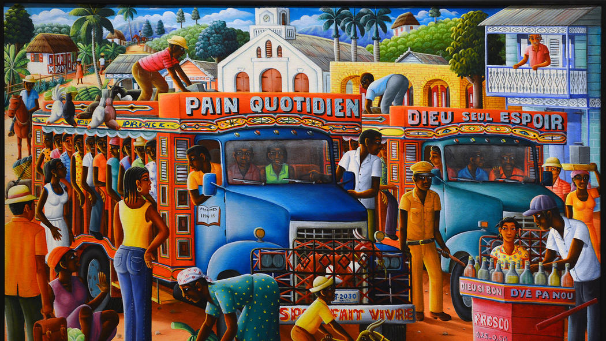
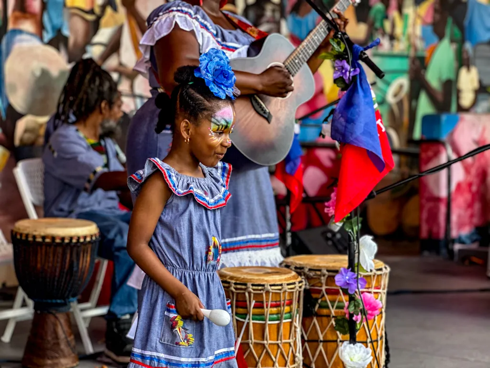
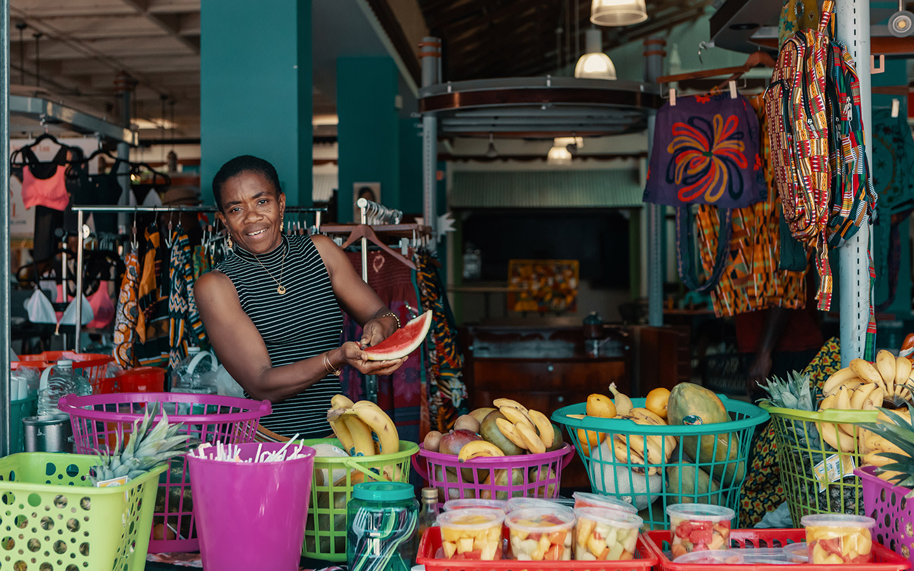

History

Haiti became the first Black republic in 1804 through revolution and resistance.
Leaders and cultural figures shaped a legacy rooted in strength and identity.
A deeper look into Haiti’s identity beyond the surface.
Explore Haiti
Haiti became the first Black republic in 1804 through revolution and resistance.
Leaders and cultural figures shaped a legacy rooted in strength and identity.

Haitian art reflects bold color, identity, and storytelling.

Festivals celebrate music, movement, and cultural pride.

Everyday life is filled with creativity, color, and rhythm.